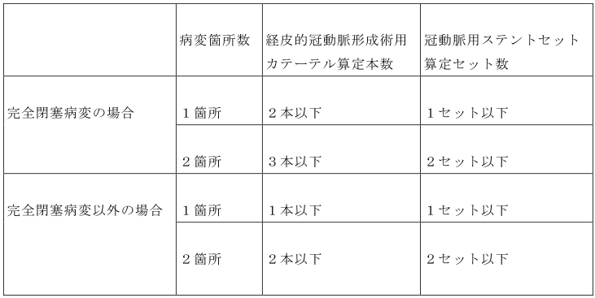

１ 急性心筋梗塞に対するもの 34,380点
２ 不安定狭心症に対するもの 24,380点
３ その他のもの 21,680点
注 手術に伴う画像診断及び検査の費用は算定しない。
通知
(１) 一方向から造影して 75％以上の狭窄病変が存在する症例に対して当該手術を行った場
合に算定する。なお、医学的根拠に基づきこれ以外の症例に対して算定する場合にあっては、診療報酬明細書の摘要欄にその理由及び医学的根拠を詳細に記載すること。
(２) 「１」の急性心筋梗塞に対するものは、次のいずれにも該当する急性心筋梗塞患者に
対して実施した場合に算定する。ただし、冠動脈インターベンション治療（区分番号「Ｋ５４６」から「Ｋ５５０－２」まで）又は冠動脈バイパス術（区分番号「Ｋ５５２」及び「Ｋ５５２－２」）後 24 時間以内に発症した場合は「１」の急性心筋梗塞に対するものは算定できない。なお、診療報酬明細書の摘要欄にアからウまでのそれぞれについて、要件を満たす医学的根拠について記載すること。
ア 心筋トロポニンＴ(ＴｎＴ)又は心筋トロポニンＩが高値であること又は心筋トロポ
ニンＴ(ＴｎＴ)若しくは心筋トロポニンＩの測定ができない場合であってＣＫ－ＭＢが高値であること。なお、診療報酬明細書の摘要欄に測定項目及びその値について記載すること。
イ 以下の（イ）から（ホ）までのいずれかに該当すること。なお、診療報酬明細書の
摘要欄に該当項目及びその所見の得られた時刻を記載すること。
(イ) 胸痛等の虚血症状
(ロ) 新規のＳＴ－Ｔ変化又は新規の左脚ブロック
(ハ) 新規の異常Ｑ波の出現
(ニ) 心臓超音波検査又は左室造影で認められる新規の心筋の可動性の低下又は壁運
動異常
(ホ) 冠動脈造影で認められる冠動脈内の血栓
ウ 以下の（イ）又は（ロ）のいずれかに該当すること。なお、診療報酬明細書の摘要
欄に該当項目、発症時刻、来院時刻及び再開通した時刻を記載すること。
(イ) 症状発現後 12 時間以内に来院し、来院からバルーンカテーテルによる責任病変
の再開通までの時間（door to balloon time）が90分以内であること。
(ロ) 症状発現後 36 時間以内に来院し、心原性ショック（Killip 分類 class Ⅳ）で
あること。
(３) 「２」の不安定狭心症に対するものは、次のいずれにも該当する不安定狭心症患者に
対して実施した場合に算定する。なお、診療報酬明細書の摘要欄にアからウまでのそれぞれについて、要件を満たす医学的根拠について記載すること。
ア 日本循環器学会の承認を得た非ＳＴ上昇型急性冠症候群ガイドラインにおける不安
定狭心症の分類で重症度 classⅠ、classⅡ又は classⅢであること。なお、診療報酬明細書の摘要欄に重症度及びその医学的根拠を記載すること。
イ 日本循環器学会の承認を得た非ＳＴ上昇型急性冠症候群ガイドラインにおける急性
冠症候群の短期リスク評価が高リスク又は中等度リスクであること。なお、診療報酬明細書の摘要欄に短期リスク評価及びその医学的根拠を記載すること。
ウ 来院から 24 時間以内（院内発症の場合は症状発現後 24 時間以内）に当該手術を開
始すること。なお、診療報酬明細書の摘要欄に来院時刻及び手術開始時刻を記載すること。
(４) 「３」のその他のものは、原則として次のいずれかに該当する病変に対して実施した場
合に算定することとし、診療報酬明細書の摘要欄にアからウまでのいずれかの要件を満たす医学的根拠について記載すること。なお、ウの病変に対して実施する場合は、循環器内科又は心臓血管外科を担当する医師が複数名参加するカンファレンス等により医学的な必要性を検討すること。また、実施の医学的な必要性及び検討の結果を診療録及び診療報酬明細書の摘要欄に記載すること。
ア 機能的虚血の原因である狭窄病変
イ 区分番号「Ｄ２０６」に掲げる心臓カテーテル法における90％以上の狭窄病変
ウ その他医学的必要性が認められる病変
(５) (２)のア及びイに該当する急性心筋梗塞患者に対して、(３)のウを満たして当該手術
を実施した場合は、「２」に準じて算定する。
(６) 次の表に該当する場合は、経皮的冠動脈形成術用カテーテル及び冠動脈用ステントセ
ットに係る費用は、それぞれ次の表に示す本数及びセット数を算定する。なお、医学的根拠に基づきこれ以上の本数を算定する場合にあっては、診療報酬明細書の摘要欄にその理由及び医学的根拠を詳細に記載すること。

(７) 同一医療機関において、同一患者の同一標的病変に対して区分番号「Ｋ５４６」経皮
的冠動脈形成術、区分番号「Ｋ５４７」経皮的冠動脈粥腫切除術、区分番号「Ｋ５４８」経皮的冠動脈形成術（特殊カテーテルによるもの）又は区分番号「Ｋ５４９」経皮的冠動脈ステント留置術を行う場合の合計回数は、５年間に２回以下を標準とする。なお、医学的根拠に基づきこれを超える回数の手術を実施する場合にあっては、以下の事項を診療報酬明細書の摘要欄に詳細に記載すること。
ア 過去の実施時期
イ 実施した手術及びそれぞれの実施時において使用した経皮的冠動脈形成術用カテー
テル、アテレクトミーカテーテル、高速回転式経皮経管アテレクトミーカテーテル、エキシマレーザー血管形成用カテーテル及び冠動脈用ステントセットの使用本数
ウ 今回、経皮的冠動脈ステント留置術を繰り返して実施する理由及び医学的根拠
(８) 当該手術が、日本循環器学会、日本冠疾患学会、日本胸部外科学会、日本心血管イン
ターベンション治療学会、日本心臓血管外科学会、日本心臓病学会、日本集中治療医学会、日本心臓リハビリテーション学会及び日本不整脈心電学会の承認を受けた「急性冠症候群ガイドライン（2018 年改訂版）」又は「安定冠動脈疾患の血行再建ガイドライン（2018年改訂版）」に沿って行われた場合に限り算定する。